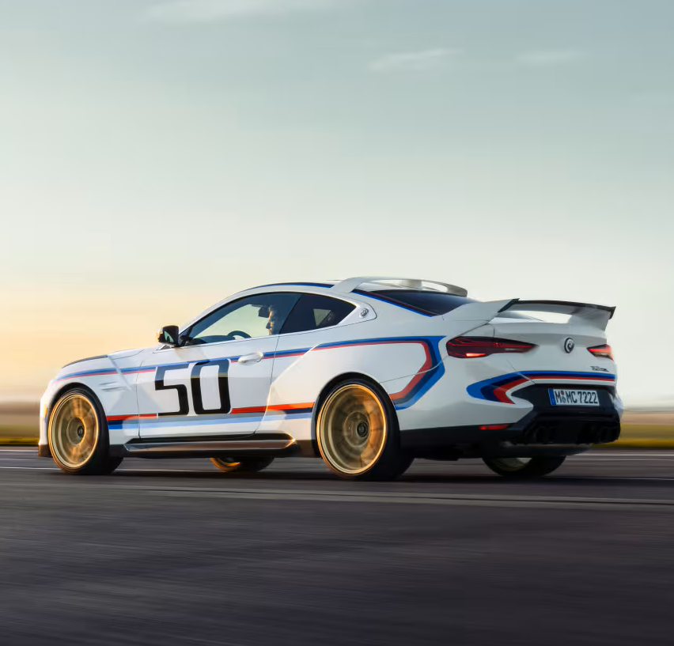

Născuți pentru a conduce, instruiți pentru a cunoaște
CarExpert este destinația dumneavoastră de încredere pentru informații de calitate, recenzii detaliate, știri proaspete și sfaturi utile despre mașini. De la cele mai recente modele ale celor mai prestigioase mărci auto, până la ghiduri practice pentru întreținerea și reparația mașinii dumneavoastră, suntem aici pentru a vă oferi tot ceea ce aveți nevoie pentru a vă bucura la maxim de experiența unui conducătorului auto.
Experimentează o aventură memorabilă alături de eleganța și rafinamentul modelelor , pentru o experiență de neuitat în lumea auto AUDI |
BMW își consolidează poziția de lider în industria auto prin adoptarea și implementarea continuă a tehnologiilor avansate, alături de un angajament ferm față de inovație. |
 |
 |
De la designul lor sofisticat și rafinat până la materialele premium și finisajele atent lucrate, fiecare model MERCEDES-BENZ emite un aer de exclusivitate și rafinament |